The original, as published: Tony R. Kuphaldt, Lessons In Industrial Instrumentation, Relating 4 to 20 mA signals to instrument variables. CC BY 4.0, https://creativecommons.org/licenses/by/4.0/. Imported as published, from https://www.ibiblio.org/kuphaldt/socratic/sinst/book/liii.pdf https://www.ibiblio.org/kuphaldt/socratic/sinst/book/liii.pdf
A 4 to 20 mA current signal represents some signal along a 0 to 100 percent scale. Usually, this scale is linear as shown by this graph:
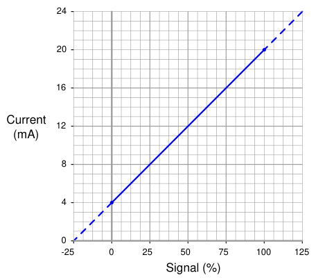
Being a linear function, we may use the standard slope-intercept linear equation to relate signal percentage to current values:
y = mx + b
Where, y = Output from instrument x = Input to instrument m = Slope b = y-intercept point (i.e. the live zero of the instrument’s range)
Once we determine suitable values for m and b, we may then use this linear equation to predict any value for y given x, and vice-versa. This is very useful for predicting the 4-20 mA signal output of a process transmitter, or the expected stem position of a 4-20 mA controlled valve, or any other correspondence between a 4-20 mA signal and some physical variable. Before we may use this equation for any practical purpose, we must determine the slope (m) and intercept (b) values appropriate for the instrument we wish to apply the equation to. Next, we will see some examples of how to do this.
For the linear function shown, we may determine the slope value (m) by dividing the line’s rise by its run. Two sets of convenient points we may use in calculating rise over run are 4 and 20 milliamps (for the rise), and 0 and 100 percent (for the run):
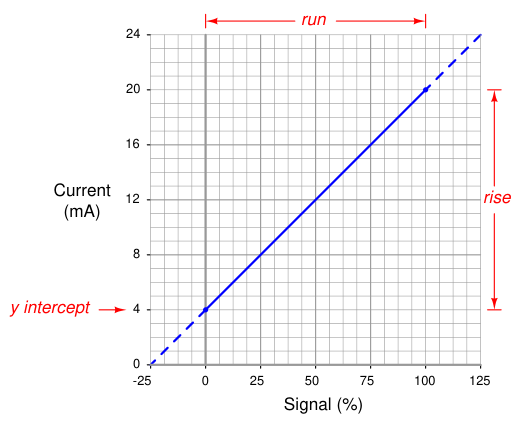
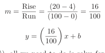
To calculate the y-intercept (b), all we need to do is solve for b at some known coordinate pair of x and y. Again, we find convenient points3 for this task at 0 percent and 4 milliamps:
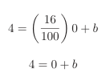
b = 4
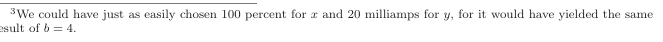
Now we have a complete formula for converting a percentage value into a milliamp value:
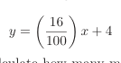
We may now use this formula to calculate how many milliamps represent any given percentage of signal. For example, suppose we needed to convert a percentage of 34.7% into a corresponding 4-20 mA current. We would do so like this:
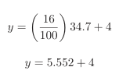
y = 9.552
Thus, 34.7% is equivalent to 9.552 milliamps in a 4-20 mA signal range.
The slope-intercept formula for linear functions may be applied to any linear instrument, as illustrated in the following examples.
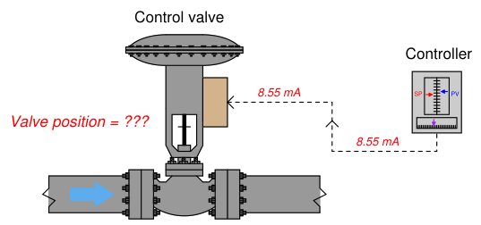
An electronic loop controller outputs a signal of 8.55 mA to a direct-responding control valve (where
4 mA is shut and 20 mA is wide open). How far open should the control valve be at this MV signal level?
To solve for percentage of stem travel (x) at 8.55 milliamps of signal current (y), we may use the linear equation developed previously to predict current in milliamps (y) from signal value in percent (x):
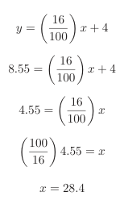
Therefore, we should expect the valve to be 28.4% open at an applied MV signal of 8.55 milliamps.
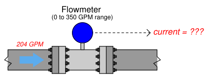
A flow transmitter is ranged 0 to 350 gallons per minute, 4-20 mA output, direct-responding. Calculate the current signal value at a flow rate of 204 GPM.
One way we could solve for the amount of signal current is to convert the flow value of 204 GPM into a ratio of the flowmeter’s full-flow value, then apply the same formula we used in the previous example relating percentage to milliamps. Converting the flow rate into a “per unit” ratio is a matter of simple division, since the flow measurement range is zero-based:
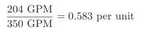
Converting a “per unit” ratio into percent merely requires multiplication by 100, since “percent” literally means “per 100”:
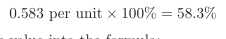
Next, we plug this percentage value into the formula:
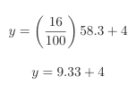
y = 13.33
Therefore, the transmitter should output a PV signal of 13.3 mA at a flow rate of 204 GPM.
An alternative approach is to set up a linear equation specifically for this flowmeter given its measurement range (0 to 350 GPM) and output signal range (4 to 20 mA). We will begin this process by sketching a simple graph relating flow rate to current:
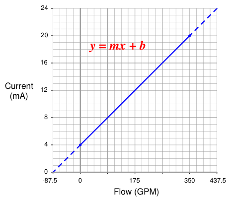
The slope (m) for this equation is rise over run, in this case 16 milliamps of rise for 350 GPM of run:
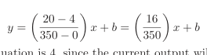
The y-intercept for this equation is 4, since the current output will be 4 milliamps at zero flow:
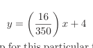
Now that the linear equation is set up for this particular flowmeter, we may plug in the 204 GPM value for x and solve for current:
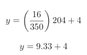
y = 13.33
Just as before, we arrive at a current of 13.33 milliamps representing a flow rate of 204 GPM.